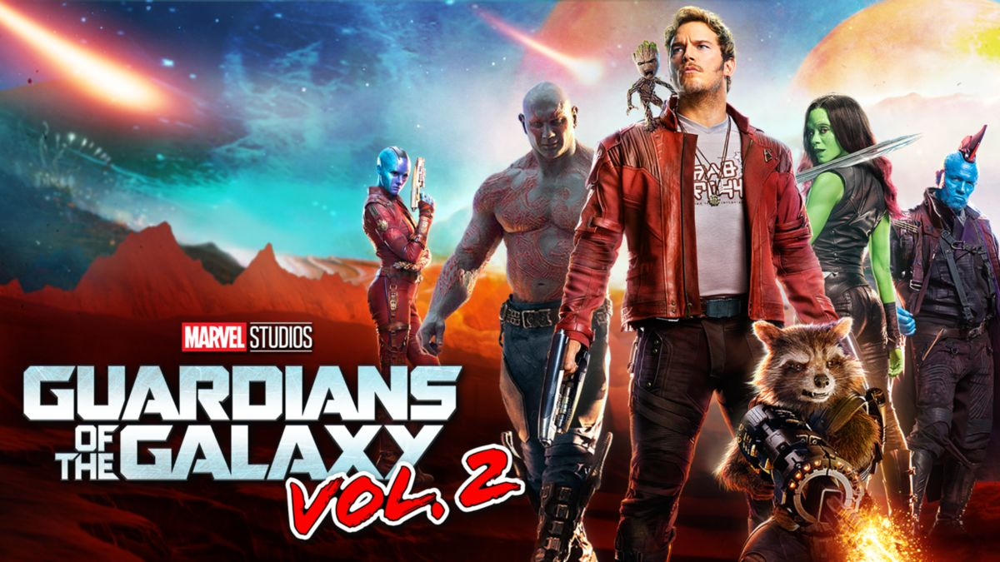

Favorite Marvel Movies
Infinity War
 Since I first started to watch marvel movies, Iron Man has always been my favorite. One of the main reason I like Iron Man is because he a regular guy. Yes, he a genius but he didn’t need to take any special formula or has special superpowers to go toe to toe with other enhanced beings.
Since I first started to watch marvel movies, Iron Man has always been my favorite. One of the main reason I like Iron Man is because he a regular guy. Yes, he a genius but he didn’t need to take any special formula or has special superpowers to go toe to toe with other enhanced beings.
Infinity War Official Trailer
WandaVision
 Black widow is my second favorite marvel character for the same reason as I chose Iron Man as my favorite character. Since she doesn’t have any special powers but skills to fight other power beings. However, I did hear that she might have taken a diluted serum that Captain America had that makes her stronger.
Black widow is my second favorite marvel character for the same reason as I chose Iron Man as my favorite character. Since she doesn’t have any special powers but skills to fight other power beings. However, I did hear that she might have taken a diluted serum that Captain America had that makes her stronger.
WandaVision Official Trailer
End Game
 I just recently started to like the Scarlet Witch from her recent series WondaVision. Watching the series and her last fights with Thanos, she seems like she has powers that she hasn’t untapped. I can’t wait to see how performs in her next movie with Doctor Strange.
I just recently started to like the Scarlet Witch from her recent series WondaVision. Watching the series and her last fights with Thanos, she seems like she has powers that she hasn’t untapped. I can’t wait to see how performs in her next movie with Doctor Strange.
End Game Official Trailer
Guardians of the Galaxy Vol. 2
 To be honest, I think Thor is ok, he’s on my favorite list because I couldn’t thing of anyone else. I will say that the actor Chris Hemsworth has done a great job playing him. I like to see how he’s evolving into more of a person versus when he first came on he acted too high and mighty for me.
Guardians of the Galaxy Vol. 2 Official Trailer